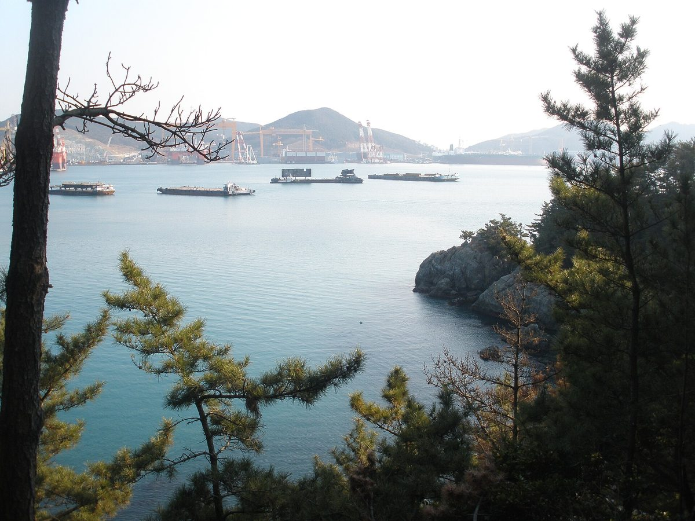

석유공사, 거제 비축기지 유휴부지에 주민참여형 태양광 요구받자 다시 검토하겠다

허성무 의원 국정감사서 매립 잡종지 활용한 햇빛소득마을·시민참여 SPC 제안…사장은 국가 중요보안시설 들어 신중한 입장
한국석유공사가 거제 석유비축기지 유휴부지에 주민참여형 태양광을 하자는 국회 요구에 대해 다시 검토하겠다는 입장을 밝혔다. 허성무 더불어민주당 의원은 19일 대구 한국가스공사 본사에서 열린 국회 산업통상자원중소벤처기업위원회 국정감사에서, 정부가 2030년까지 햇빛소득마을 2,500곳 조성을 추진하는데도 석유공사는 참여하지 않고 있다며 손주석 석유공사 사장에게 부지 활용을 요구했다. 허 의원에 따르면 이 부지는 지하 저장시설을 지으며 나온 암석으로 바다를 메운 잡종지로, 비축기지 전체 면적의 약 10%에 이르지만 별다른 용도 없이 남아 있으며, 허 의원은 이곳에 햇빛소득마을을 만들거나 시민참여형 특수목적법인(SPC)을 세워 중규모 태양광을 하자고 제안했다. 손 사장은 비축기지가 국가 중요보안시설이고 지금 드나드는 외부 인력은 시설 유지보수 인력이어서 태양광 사업과는 성격이 다르다며 신중한 태도를 보였다. 허 의원은 보안시설에서도 외부 업체가 전기설비 유지보수와 안전관리를 맡고 있고, 지난해 12월 확정된 제5차 석유비축계획에도 지역사회와 공존하는 운영이 들어 있다며 거제시와 주민의 협력 요청을 계속 거절하는 것은 과하다고 지적했다. 이에 손 사장은 "다시 한번 살펴보겠다"고 답했다.
시민에너지 관점
정부가 2030년까지 햇빛소득마을 2,500곳을 만들겠다면서 넓은 부지를 가진 공기업이 빠져 있다면 그 목표는 주민의 땅과 지붕에만 기대게 된다. 보안시설이라는 우려는 가볍지 않지만, 이미 외부 업체가 전기설비 유지보수를 맡고 있다면 출입 관리와 운영 위탁 방식을 정해 풀 수 있는 문제로 보인다. 일본 나가노현 이이다시는 공공시설 지붕을 20년간 무상으로 빌려주고 시민이 세운 회사가 발전소를 짓게 해 주민 주도 발전의 길을 열었다. 석유공사는 쓰지 않는 매립지를 비축기지와 오래 이웃해 온 거제 주민의 발전소 터로 내놓는 방안부터 구체적으로 답해야 한다.
출처: 이데일리 2026-10-19 정두리 원문 보기
韓国石油公社、巨済備蓄基地の遊休地に住民参加型太陽光を求められ再検討へ
ホ・ソンム議員が国政監査で埋立地の雑種地を活用した太陽光所得村・市民参加SPCを提案…社長は国家重要保安施設を理由に慎重姿勢
韓国石油公社が、巨済（コジェ）石油備蓄基地の遊休地で住民参加型の太陽光を進めるよう求める国会の要求について、改めて検討する考えを示した。共に民主党のホ・ソンム議員は19日、大邱の韓国ガス公社本社で開かれた国会産業通商資源中小ベンチャー企業委員会の国政監査で、政府が2030年までに太陽光所得村2,500カ所の造成を進めているのに石油公社は参加していないと指摘し、ソン・ジュソク石油公社社長に用地の活用を求めた。ホ議員によると、この用地は地下貯蔵施設の建設で出た岩石で海を埋め立てた雑種地で、備蓄基地全体の面積の約10%に及ぶが、特段の用途もなく残っており、ホ議員はここに太陽光所得村を造成するか、市民参加型の特別目的会社（SPC）を設立して中規模の太陽光発電を行うよう提案した。ソン社長は、備蓄基地は国家重要保安施設であり、現在出入りする外部の人員は施設の維持補修要員で太陽光事業とは性格が異なるとして、慎重な姿勢を見せた。ホ議員は、保安施設でも外部業者が電気設備の維持補修や安全管理を担っており、昨年12月に確定した第5次石油備蓄計画にも地域社会と共存する運営が盛り込まれているとして、巨済市と住民の協力要請を断り続けるのは行き過ぎだと指摘した。これに対しソン社長は「もう一度よく検討する」と答えた。
市民エネルギーの視点
政府が2030年までに太陽光所得村を2,500カ所つくるとしながら、広い用地を持つ公企業が加わらないのであれば、その目標は住民の土地や屋根だけに頼ることになる。保安施設だという懸念は軽くないが、すでに外部業者が電気設備の維持補修を担っているのであれば、出入りの管理や運営委託の方式を定めることで解決できる問題だとみられる。長野県飯田市は公共施設の屋根を20年間無償で貸し、市民が設立した会社に発電所を建てさせ、住民主導の発電への道を開いた。石油公社は使われていない埋立地を、備蓄基地と長く隣り合ってきた巨済の住民の発電所用地として差し出す方策から具体的に答えるべきだ。
出典: Edaily 2026-10-19 Jeong Du-ri 原文を読む
韩国石油公社被要求在巨济储备基地闲置土地建居民参与型太阳能，表示将重新研究
议员Heo Seong-mu在国政监查中提议利用填海杂地建设阳光收入村或市民参与SPC；社长以国家重要安保设施为由态度谨慎
韩国石油公社针对国会提出的在巨济石油储备基地闲置土地上建设居民参与型太阳能的要求，表示将重新研究。共同民主党议员Heo Seong-mu 19日在大邱韩国燃气公社总部举行的国会产业通商资源中小风险企业委员会国政监查中指出，政府正在推进到2030年建设2,500个阳光收入村，而石油公社却没有参与，并要求石油公社社长Son Ju-seok开放土地。据Heo议员介绍，这块土地是用修建地下储油设施时挖出的岩石填海形成的杂地，约占储备基地总面积的10%，目前没有特别用途；Heo议员提议在此建设阳光收入村，或成立市民参与型特殊目的法人（SPC）开展中等规模的太阳能发电。Son社长表示，储备基地是国家重要安保设施，目前进出的外部人员是设施维护人员，与太阳能项目性质不同，态度谨慎。Heo议员则指出，安保设施里也有外部企业负责电气设备维护和安全管理，去年12月确定的第五次石油储备计划也包含与地方社会共存的运营内容，一再拒绝巨济市和居民的合作请求有些过分。对此Son社长回答说："会再好好研究一下。"
市民能源视角
政府提出到2030年建设2,500个阳光收入村，如果拥有大片土地的国有企业缺席，这一目标就只能依靠居民的土地和屋顶。安保设施的顾虑不能轻视，但既然已有外部企业承担电气设备维护，这似乎是可以通过制定出入管理和委托运营方式来解决的问题。日本长野县饭田市把公共设施屋顶无偿出借20年，让市民设立的公司建设电站，开辟了居民主导发电的道路。石油公社应首先具体回答：能否把闲置的填海土地交给与储备基地长期为邻的巨济居民，用作他们自己的电站用地。
来源: Edaily 2026-10-19 Jeong Du-ri 查看原文
KNOC agrees to revisit resident solar on idle land at Geoje oil reserve base
Lawmaker Heo Seong-mu proposes a Sunlight Income Village or citizen-owned SPC on reclaimed land; CEO cautious, citing national security status
Korea National Oil Corporation (KNOC) said it would look again at a parliamentary call to use idle land at its Geoje oil stockpiling base for resident-participation solar. At a National Assembly trade and industry committee audit held at Korea Gas Corporation's headquarters in Daegu on the 19th, Democratic Party lawmaker Heo Seong-mu noted that the government aims to build 2,500 Sunlight Income Villages by 2030 yet KNOC was not taking part, and pressed CEO Son Ju-seok to open up the site. According to Heo, the land was created by filling in the sea with rock dug out to build the underground storage, is classified as miscellaneous land, covers about 10% of the base and has no particular use; he proposed a Sunlight Income Village or a citizen-participation special purpose company (SPC) to run a mid-sized solar plant there. Son was cautious, saying the base is a national key security facility and that the outside staff who enter it now do maintenance work, which differs in nature from a solar business. Heo countered that outside contractors already handle electrical maintenance and safety at security facilities, and that the fifth oil stockpiling plan finalised last December includes operating in coexistence with local communities, calling the repeated refusals of Geoje city's and residents' requests excessive. Son replied that the company would look into it again.
Citizen Energy View
If the government wants 2,500 Sunlight Income Villages by 2030 but state companies with large landholdings stay out, the target will rest on residents' own land and roofs alone. Security concerns are not trivial, but if outside contractors already maintain the electrical systems, the issue appears solvable through access controls and contracted operation. Iida in Nagano Prefecture, Japan, lent public building roofs free for 20 years to a company set up by citizens, opening the way for resident-led generation. KNOC should give a concrete answer, starting with whether it will offer its unused reclaimed land as a power plant site for the Geoje residents who have long lived next to the base.
Source: Edaily 2026-10-19 Jeong Du-ri Read the original